The original, as published: Tony R. Kuphaldt, Lessons In Industrial Instrumentation, Differential pressure transmitters. CC BY 4.0, https://creativecommons.org/licenses/by/4.0/. Imported as published, from https://www.ibiblio.org/kuphaldt/socratic/sinst/book/liii.pdf https://www.ibiblio.org/kuphaldt/socratic/sinst/book/liii.pdf
Differential pressure transmitters constructed for industrial measurement applications typically consist of a strong (forged metal) body housing the sensing element(s), topped by a compartment housing the mechanical and/or electronic components necessary to translate the sensed pressure into a standard instrumentation signal (e.g. 3-15 PSI, 4-20 mA, digital fieldbus codes):
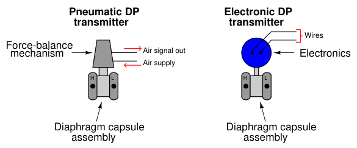
Two models of electronic differential pressure transmitter appear in the following photographs, the Rosemount model 1151 (left) and model 3051 (right):
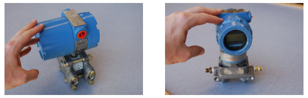
Two more models of electronic differential pressure transmitter are shown in the next photograph, the Yokogawa EJA110 (left) and the Foxboro IDP10 (right):
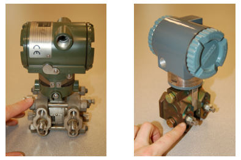
In each of these differential pressure transmitter examples, the pressure-sensing element is housed in the bottom half of the device (the forged-steel structure) while the electronics are housed in the top half (the colored, round, cast-aluminum structure). Regardless of make or model, every differential pressure (“DP”, “d/p”, or ∆P)12 transmitter has two pressure ports to sense different process fluid pressures. These ports typically have 1
4 inch female NPT threads for convenient connection to the process. One of these ports is labeled “high” and the other is labeled “low”. This labeling does not necessarily mean that the “high” port must always be at a greater pressure than the “low” port. What these labels represent is the effect any increasing fluid pressure applied to that port will have on the direction of the output signal’s change.
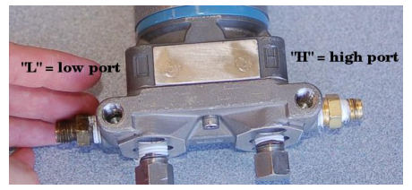
12As far as I have been able to determine, the labels “D/P” and “DP cell” were originally trademarks of the Foxboro Company. Those particular transmitter models became so popular that the term “DP cell” came to be applied to nearly all makes and models of differential pressure transmitter, much like the trademark “Vise-Grip” is often used to describe any self-locking pliers, or “Band-Aid” is often used to describe any form of self-adhesive bandage.
The most common sensing element used by modern DP transmitters is the diaphragm. One side of this diaphragm receives process fluid pressure from the “high” port, while the other receives process fluid pressure from the “low” port. Any difference of pressure between the two ports causes the diaphragm to flex from its normal resting (center) position. This flexing is then translated into an output signal by any number of different technologies, depending on the manufacturer and model of the transmitter:
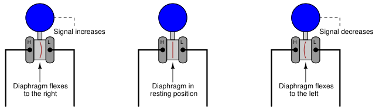
Equal pressures applied Phigh < Plow to "high" and "low" ports
Phigh > Plow
The concept of differential pressure instrument port labeling is very similar to the “inverting” and “noninverting” labels applied to operational amplifier input terminals:
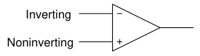
The “+” and “−” symbols do not imply polarity of the input voltage(s); i.e. it is not as though the “+” input must be more positive than the “−” input. These symbols merely represent the different direction each input tends to drive the output signal. An increasing potential applied to the “+” input drives the opamp’s output positive, while an increasing potential applied to the “−”
input drives the opamp’s output negative. Phrasing this in terms common to closed-loop control systems, we could say that the “+” input is direct-acting while the “−” input is reverse-acting.
Similarly, the “H” and “L” labels on a DP transmitter’s ports do not imply magnitude of input pressures; i.e. it is not as though the “H” port’s pressure must be greater than the “L” port’s pressure. These symbols merely represent the different effects on the output signal resulting from pressure applied to each port. An increasing pressure applied to the “high” port of a DP transmitter will drive the output signal to a greater level (up), while an increasing pressure applied to the “low” port of a DP transmitter will drive the output signal to a lesser level (down)13:
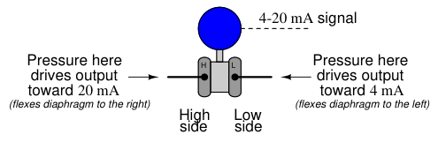
The ability to arbitrarily connect a DP transmitter to a process in such a way that it is either direct-acting or reverse-acting is a great advantage, as we will later see.
In the world of electronics, we refer to the ability of a differential voltage sensor (such as an operational amplifier) to sense small differences in voltage while ignoring large potentials measured with reference to ground by the phrase common-mode rejection. An ideal operational amplifier completely ignores the amount of voltage common to both input terminals, responding only to the difference in voltage between those terminals. This is precisely what a well-designed DP instrument does, except with fluid pressure instead of electrical voltage. A DP instrument ignores gauge pressure common to both ports, while responding only to differences in pressure between those two ports. Stated in other words, a differential pressure instrument (ideally14) responds only to differential pressure while ignoring common-mode pressure.
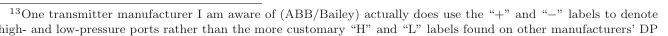
highand low-pressure ports rather than the more customary “H” and “L” labels found on other manufacturers’ DP products. 14Perfect common-mode rejection is impossible for differential pressure instruments just as it is impossible for electronic voltage-measuring instruments, but in either case the effect is usually minimal. For differential pressure transmitters, the effect of common-mode pressure on the instrument’s output signal is sometimes referred to as the line pressure effect or static pressure effect, typically stated as a percentage of the instrument’s upper range limit per unit of common-mode pressure.
To illustrate, we may connect the “high” and “low” ports of a differential pressure transmitter together using pipe or tube, then expose both ports simultaneously to a source of fluid pressure such as pressurized air from an air compressor. If the transmitter is in good working order, it should continue to register zero differential pressure even as we vary the amount of static pressure applied to both ports. So long as the applied pressures to each port are equal, the transmitter’s sensing diaphragm should experience zero net force pushing left or right. All force applied to the diaphragm from the “high” port’s fluid pressure should be precisely countered (canceled) by force applied to the diaphragm from the “low” port’s fluid pressure. An electrical analogy to this would be connecting both red and black test leads of a voltmeter to a common point in an electrical circuit, then varying the amount of voltage between that point and earth ground. Since the voltmeter only registers differences of potential between its test leads, and those test leads are now electrically common to one another, the magnitude of common-mode voltage between that one point of the circuit and earth ground is irrelevant from the perspective of the voltmeter:
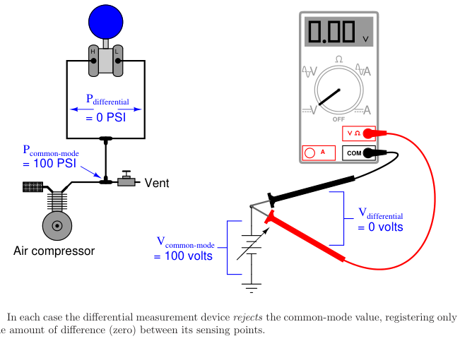
The same common-mode rejection principle reveals itself in more complex fluid and electrical circuits. Consider the case of a DP transmitter and a voltmeter, both used to measure differential quantities in a “divider” circuit15:
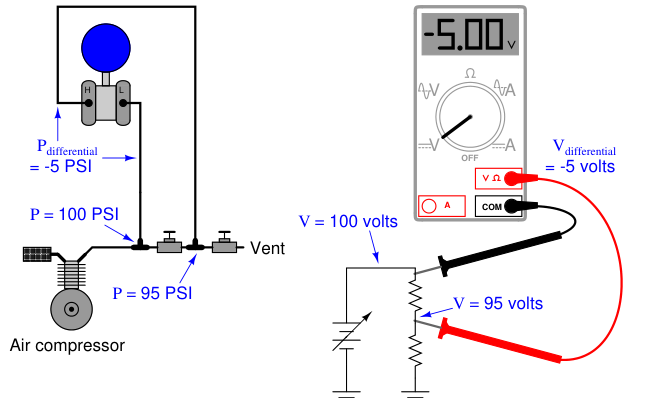
In each case the differential measurement device responds only to the difference between the two measurement points, rejecting the common-mode value (97.5 PSI for the pressure transmitter, 97.5 volts for the voltmeter). Just to make things interesting in this example, the “high” side of each measuring instrument connects to the point of lesser value, such that the measured difference is a negative quantity. Like digital voltmeters, modern DP transmitters are equally capable of accurately measuring negative pressure differences as well as positive pressure differences.
15The electrical circuit shown on the right uses a pair of series-connected resistors to divide the source voltage into two parts, 5 volts and 95 volts. The pneumatic circuit shown on the left uses a pair of series-connected hand valves to divide the source pressure into two parts, 5 PSI and 95 PSI.
A vivid contrast between differential pressure and common-mode pressure for a DP instrument is seen in the pressure ratings shown on the nameplate of a Foxboro model 13A differential pressure transmitter:
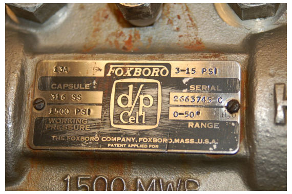
This nameplate tells us that the transmitter has a calibrated differential pressure range of 50” H2O (50 inches water column, which is only about 1.8 PSI). However, the nameplate also tells us that the transmitter has a maximum working pressure (MWP) of 1500 PSI. “Working pressure” refers to the amount of gauge pressure common to each port, not the differential pressure between ports. Taking these figures at face value means this transmitter will register zero (no differential pressure) even if the gauge pressure applied equally to both ports is a full 1500 PSI! In other words, this differential pressure transmitter will reject up to 1500 PSI of common-mode gauge pressure, and respond only to small differences in pressure between the ports (1.8 PSI differential being enough to stimulate the transmitter to full scale output).